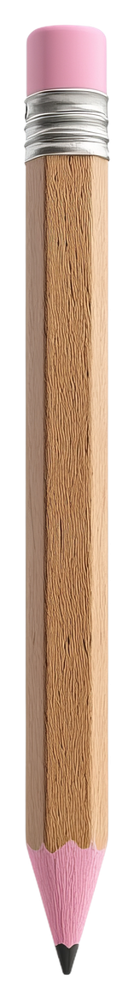
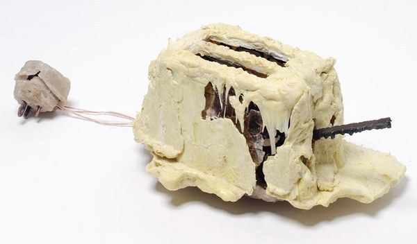
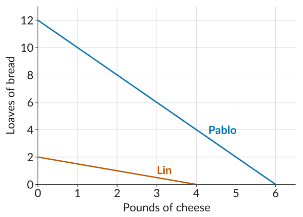
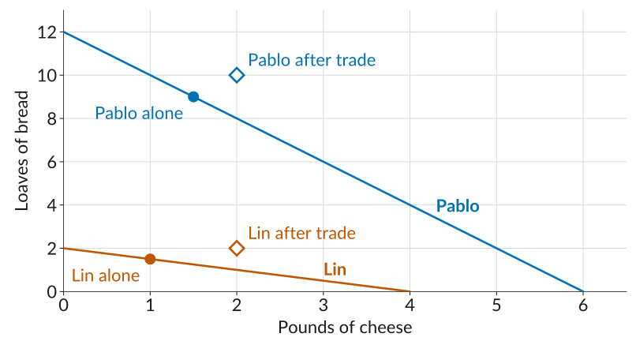

ECON 201: Principles of Microeconomics
Lecture 4
A concert hall has unsold seats an hour before the show and lets students in free. The opportunity cost to the hall of admitting a student is:
a) The regular ticket price.
b) The hall’s cost per seat for the evening.
c) Close to zero, since the seat would otherwise be empty.
d) Negative, since the student will buy snacks.
The hall is paid for and the seat would otherwise sit empty. What does letting one more student in really cost?
Today: why specialization and trading make us better off.
A pencil tells the story of how it was made:


Specialization: each person does just one or a few of the large number of tasks necessary to complete some project or reach some goal.
This seems obvious, but just two centuries ago, most families grew their own food and made much of their own clothing.
Pablo and Lin are neighbors. Each spends about 8 hours on Sunday baking bread and making cheese for the week’s meals. If they spent the whole day on just one food:
| Loaves of bread | Pounds of cheese | |
|---|---|---|
| Pablo | 12 | 6 |
| Lin | 2 | 4 |
They can also split the day: with half his time on each food, Pablo would make 6 loaves and 3 pounds of cheese.
Think, pair, share: Pablo can make more of both goods. Is there still a gain from trading with Lin? Think for a minute, then see what your neighbor thinks.
A person or a country has an absolute advantage in the production of a particular good if, given a set of available inputs, they can produce more of it than another person or country.
So what does each of them give up? Pablo’s Sunday can produce 12 loaves or 6 pounds of cheese, so for Pablo each pound of cheese costs 12 / 6 = 2 loaves of bread.
| Opportunity cost of… | 1 pound of cheese | 1 loaf of bread |
|---|---|---|
| Pablo | 12 / 6 = 2 loaves | 6 / 12 = 0.5 pounds |
| Lin | 2 / 4 = 0.5 loaves | 4 / 2 = 2 pounds |
A pound of cheese costs Pablo four times as much bread as it costs Lin. The other way around, a loaf costs Lin four times as much cheese as it costs Pablo.
A person or a country has a comparative advantage in the production of a particular good if the cost to them of producing it, relative to the cost of another good, is lower than for another person or a country.
Height shows absolute advantage; slope shows comparative advantage.

If they cannot trade, each eats exactly what they make. Suppose each of them spends 75% of their time on bread and 25% on cheese.
| Loaves of bread | Pounds of cheese | |
|---|---|---|
| Pablo | 0.75 × 12 = 9 | 0.25 × 6 = 1.5 |
| Lin | 0.75 × 2 = 1.5 | 0.25 × 4 = 1 |
| Total | 10.5 | 2.5 |
Under self-sufficiency, each person consumes exactly what they produce.
Now suppose each of them makes only the food in which they have the comparative advantage: so Pablo makes bread, and Lin makes cheese.
| Loaves of bread | Pounds of cheese | |
|---|---|---|
| On their own (total) | 10.5 | 2.5 |
| Specialized | 12 | 4 |
The two of them now produce 1.5 more loaves and 1.5 more pounds of cheese than before, with the same skills and the same hours. Total output went up just from rearranging who does what.
Total output is higher, but look at what each of them ends up with.
| On their own | Specialized | ||
|---|---|---|---|
| Pablo | Bread | 9 | 12 |
| Cheese | 1.5 | 0 | |
| Lin | Bread | 1.5 | 0 |
| Cheese | 1 | 4 |
Pablo has 12 loaves and no cheese. Lin has 4 pounds of cheese and no bread. Specializing is only worthwhile if they can trade.
Now suppose they agree on a deal: Lin sells Pablo 2 pounds of cheese for 2 loaves of bread.
| On their own | Specialized | Trades | Consumes | ||
|---|---|---|---|---|---|
| Pablo | Bread | 9 | 12 | sells 2 | 10 |
| Cheese | 1.5 | 0 | buys 2 | 2 | |
| Lin | Bread | 1.5 | 0 | buys 2 | 2 |
| Cheese | 1 | 4 | sells 2 | 2 | |
| Total | Bread | 10.5 | 12 | 12 | |
| Cheese | 2.5 | 4 | 4 |
Compare the first column with the last: both of them now consume more of both goods.

Pablo bought 2 pounds of cheese from Lin, even though Pablo could have made them in less time. Why does that make sense?
Someone can be worse at producing everything and still have a comparative advantage in something.
ECON 201 · Lecture 4